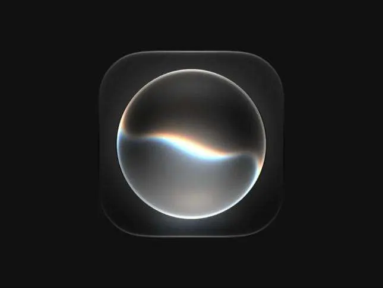

苹果给 Siri AI 上每日限额：iOS 27.3 beta 2 起 iCloud+ 订阅最高提额至 20 倍
四维 78 ×1.15 Tier 0：Apple×1.05 跨源独立报道≈ 94
苹果正在 iOS 27.3、iPadOS 27.3 与 macOS 27.3 测试版中为 Siri AI 和部分 Apple Intelligence 引入每日免费使用额度：云端处理的复杂请求、图像生成编辑、云端快捷指令和第三方调用的私有云计算功能都要消耗额度，本地简单指令不受影响。额度按设备分别计算，用完可等次日重置，或订阅 iCloud+ 提升——50GB 不加额，200GB / 2TB / 6TB / 12TB 分别最高提升 2 / 5 / 10 / 20 倍，家庭共享共用额度池先到先得；国行设备暂不受影响。
💡 点评：这是苹果 AI 走向「算账期」的标志性一步：免费额度+订阅提额实质是把 AI 用量挂上付费墙，iCloud+ 从存储服务变成 AI 会员。对用户，重度 AI 使用未来是订阅决策；对行业，端侧「免费」与云侧「计费」的分界线第一次被苹果画得这么细。
IT之家 / MacRumors / AnTuTu / 网易·凤凰网科技